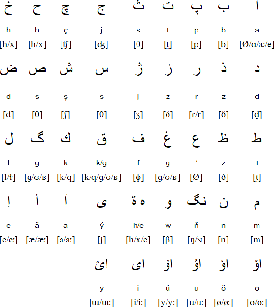
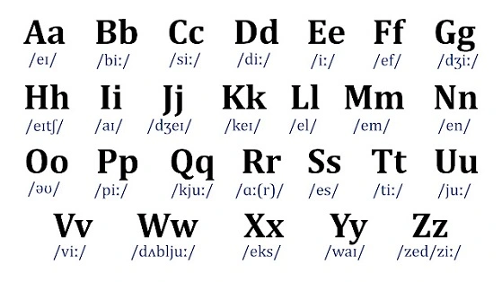

Languages
Turkmen

Turkmen is the official language, spoken by about 72% of the population. It belongs to the Turkic language family and has used three different scripts over the centuries, settling on the Latin alphabet in 1993.
Russian

Russian is still widely spoken, especially in cities and among older generations, a lasting legacy of the Soviet era. It remains commonly used in business, science, and cross-cultural communication.
English

English is growing fast, especially among young people in Ashgabat. The government has been investing in English education to help the country connect with the wider world.